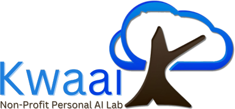
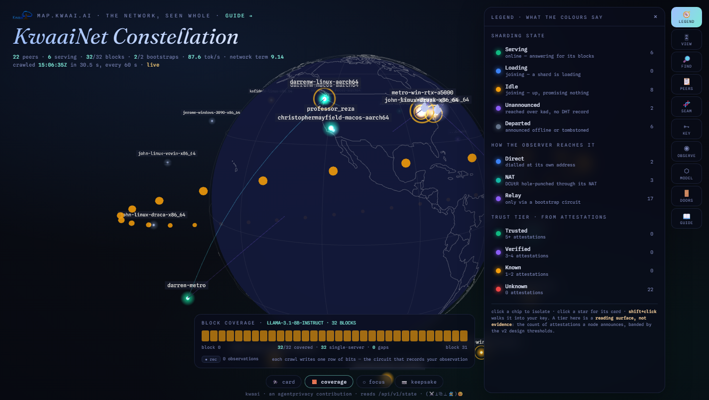
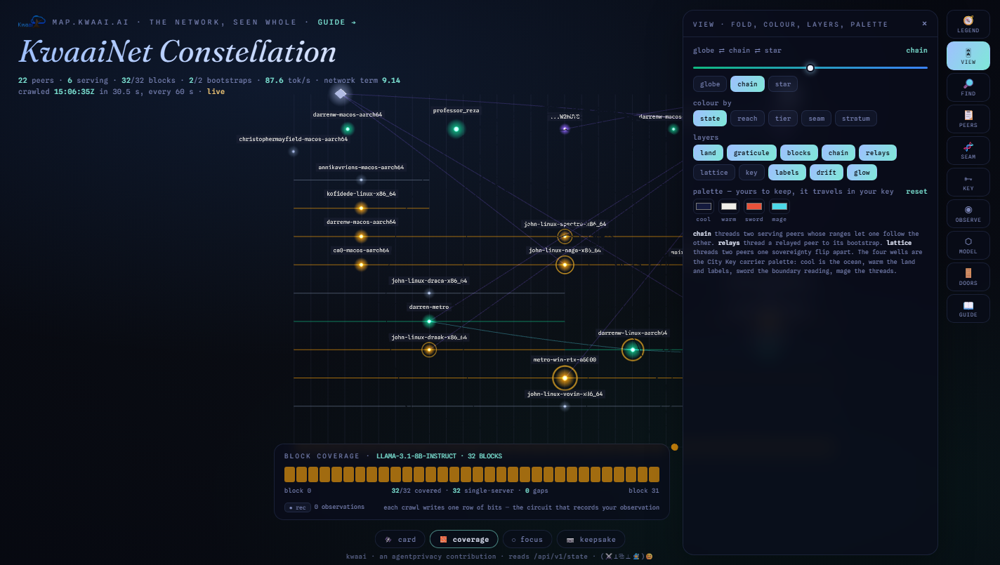
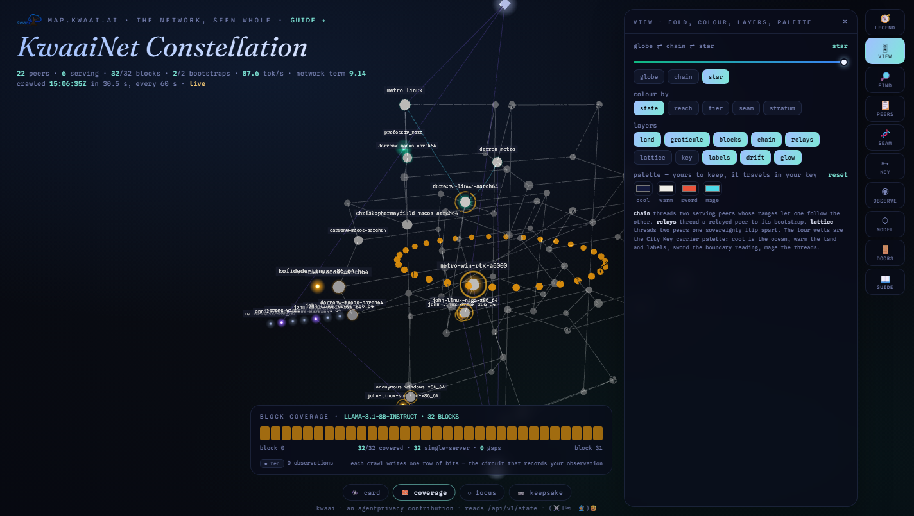
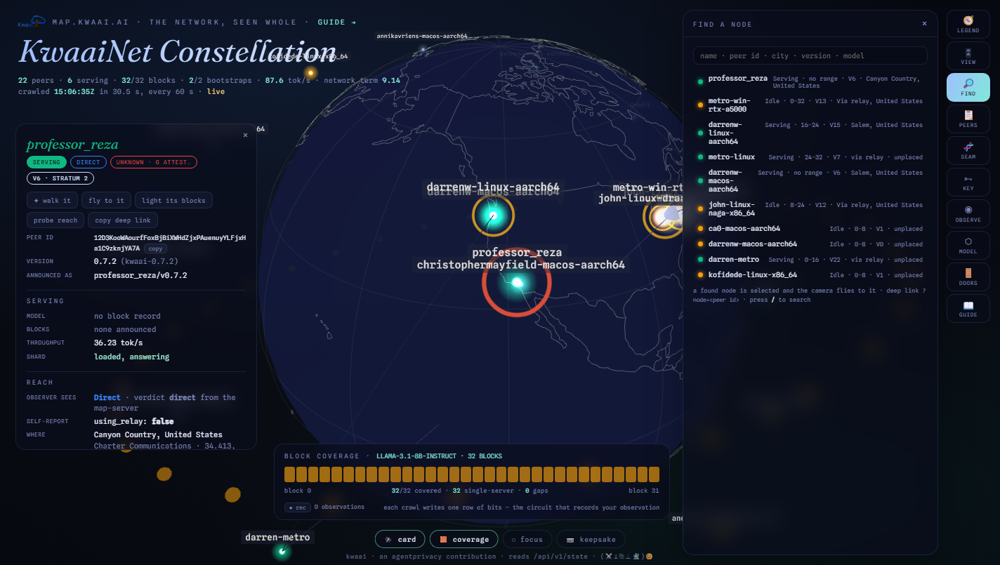
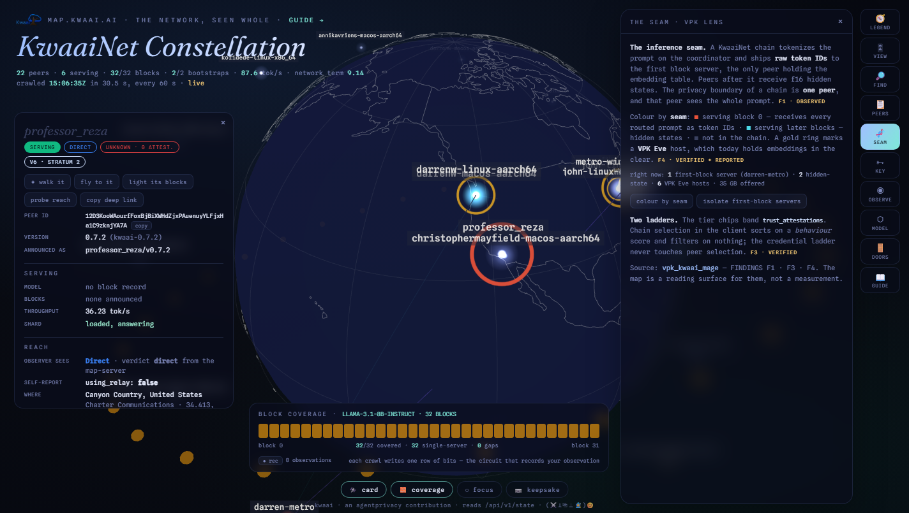
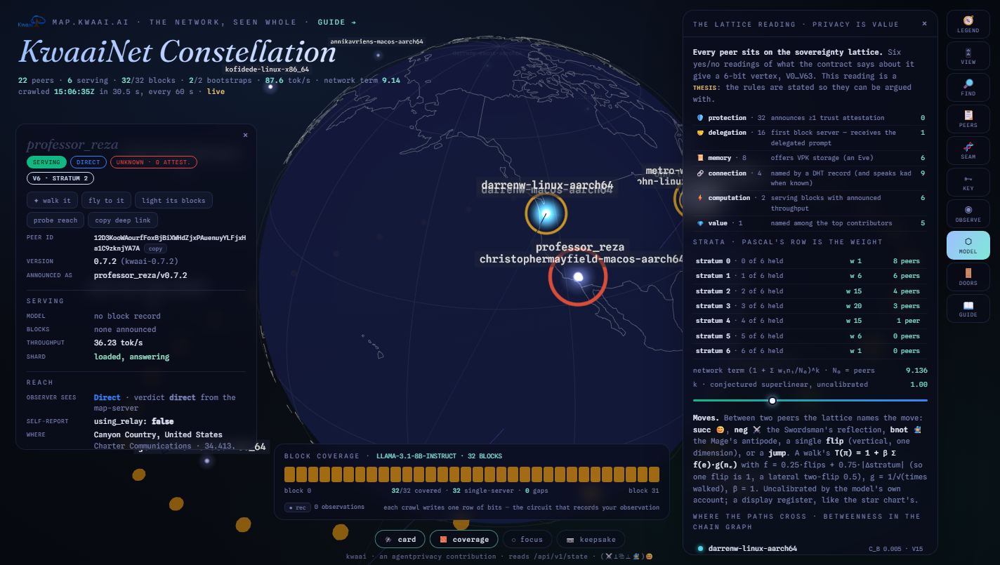
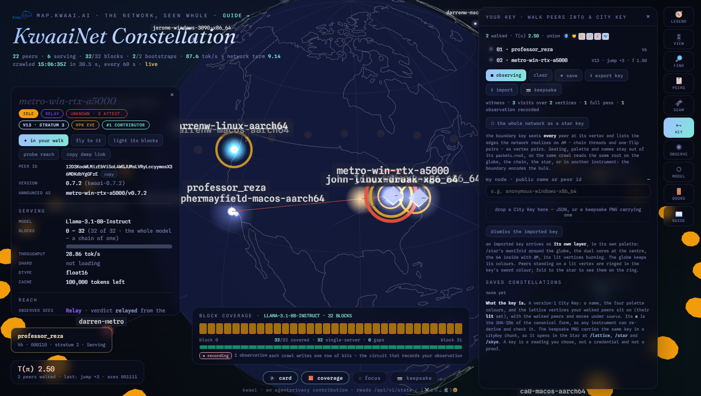
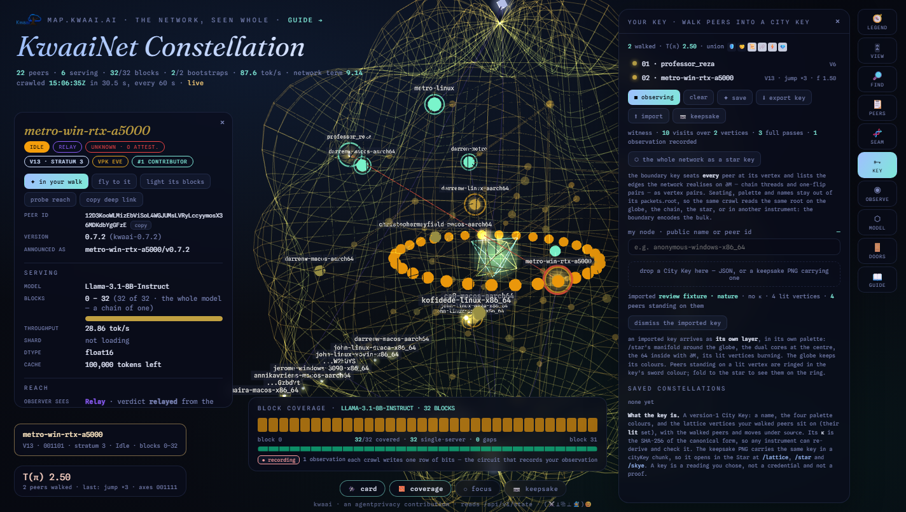

vpk_kwaai_mage · the map lane · to the VPK working groupWhat was built on the map, and why the connections were made
The KwaaiNet map was rebuilt as an instrument that reads the network's own public document and lays a sovereignty lattice over it. This reader says what each part is, which of the working group's stated aims it touches, and why each connection was made rather than another. It is written to be checked, not believed.
From the sibling lane, converging.
This is the second outward act of the vpk_kwaai lane, whose first act named the inference seam and offered a disclosure ladder for it. The posture is the same as that lane's ADDRESS.md: a participant converging, not a stranger arriving; offered, not pushed; every claim tiered and every finding carrying its command. Nothing here asks Kwaai to change a protocol. It asks for review.
The whole thing runs locally against https://map.kwaai.ai/api/v1/state and is not deployed anywhere. It lives in this repository as the map/ lane, on the branch map-constellation until it is merged; the first lane is untouched.
Three aims, one open condition.
The VPK whitepaper states its research programme as three aims, and one condition on its own guarantee. The connections below are made against these, in these words.
Aim 1 — VPK PHE Compliance Specification. Define the formal criteria any PHE implementation must satisfy at each compliance tier; reduce the reference implementations' security arguments to hardness assumptions or identify the attacks that constrain them; publish the specification as an open standard.whitepaper, research programme
Aim 2 — Scale Validation. Extend VPKbench to 10M vectors; characterise HNSW recall on encrypted corpora; benchmark multi-shard deployment across WAN on KwaaiNet.untouched by this work
Aim 3 — Oversight Validity and Standardization. Charter sMCP under ToIP; validate EigenTrust-based trust propagation as a mechanism to extend human-anchored oversight across a distributed network of credentialed nodes, contributing to the LF Decentralized Trust Graph WG; demonstrate that an sMCP audit trail provides sufficient oversight signal.whitepaper, research programme
The condition. sMCP's guarantee holds "for deployments where Alice's AI model runs locally or in a trusted enclave."the sentence the first lane was aimed at; on a heterogeneous mesh it does not hold
One document, three seatings, a card, a lens, a lattice, a key, an observer.
the document
Everything on the page comes from GET /api/v1/state — the document every node's health monitor polls and kwaai-cli reads to choose a model. Every peer the crawler identified over kad or found named in a DHT record, the per-model server rows, the top contributors, the bootstrap states. No new surface was added to the network; the map reads what it already publishes. The deployed page's own rules for state and reach are kept verbatim so the two never disagree about what a peer is. VERIFIED · snapshot.rs · kwaainet.html
three seatings on one dial



the card

the seam lens

the lattice reading and the model

the key lane and the observer


And the boundary key: the whole network as a star key, whose root hashes only which vertices are occupied and which vertex pairs the network realises as edges. Seating, palette, names and highlights stay out of the root.
Each one is answerable to an aim, a finding, or a canon.
| connection | why this, and not another | answers to |
|---|---|---|
the map reads /api/v1/stateVERIFIED | It is the one document the fleet already agrees on. Reading anything else would make the map a second opinion about what a peer is. The v1 page's state and reach rules are copied verbatim for the same reason. | the honesty the first lane promised: checkable against main, no invented surface |
| the seam lens F1 OBSERVED · F3 · F4 VERIFIED | Aim 1 needs its residuals named. The largest residual on the inference side is the first block server, which sees the whole prompt. The lens makes that peer visible on the network's own map, every minute, instead of in a finding someone has to go and read. F4 rides along because a storage host is the other place plaintext rests. | Aim 1 (the residual); the condition on sMCP's guarantee |
| the tier shown, and caveated F3 VERIFIED | The tier bands the attestations a peer announces. It is shown because it is in the document, and caveated because chain selection sorts on a behaviour score and gates on nothing: the credential ladder never touches which peer serves you. A map that showed tiers without saying that would be a brochure. | Aim 3: a credentialed network needs the credential ladder to be load-bearing before propagation over it means anything |
| the lattice reading THESIS | Six rules, one per axis, each reading a different field so no two bits are set by one fact. They turn a peer into a vertex on the same lattice the City's instruments stand on. They are written on the wall so they can be argued with one at a time; change one and the peers move and the κ changes. | the Privacy Is Value model's own axes (A1); the first time it has been laid over a live network |
| the model's machinery CANON in form · weights OPEN | Once a vertex exists nothing further is asserted. Operators, named moves, T(π), the stratum-weighted network term and betweenness are the model's, and their uncalibrated constants are printed as such on the page. Betweenness was chosen because V5.4 says where the value lives: where the most paths cross — which on a chain graph is a real, computable place. | the model (A2; edge-value; network-topology; V5.4 §10.2) |
| the boundary key THESIS from C9 | Aim 3 asks whether an audit trail can give oversight signal. The first lane's answer was a ledger renderable by anyone and readable by no one. The boundary key is that idea applied to a whole network: a root that names the network's shape — occupancy and realised edges — and nothing about how you looked at it, so the same crawl reads the same root from any seat, palette or hand. It falls out of the holographic bound rather than being bolted on. | Aim 3 (oversight without visibility); PATHWAY §4–5; the holographic bound C9 |
| the witness and the recorder records, not proofs | Presence recorded as a count, in the same shape the Star's lattice mints (witness.spent by vertex), and one row of coverage bits per crawl. Both ride in an exported key. They are the raw material a later bilateral receipt could attest — the receipt rule the first lane wrote — and the page says plainly that neither is a proof. | PATHWAY §4 (the receipt); the lane's discipline of saying what an instrument is for |
| the City Key format and the PNG carrier CANON A3 · A7 | Exported keys use the κ rule and the text-chunk carrier every instrument in the City already reads, so a key made on the map opens in the lattice, the manifold and the sky without translation. Interoperability was already there; the map only had to not invent a new format. | the soulbis instruments; the Star Key reader |
| the star as a trust picture THESIS | A key's lit set and a crawl's occupied vertices are subsets of one ring of 64. Laid on the same surface they can be compared for overlap, the way the sky compares two keys. That is a trust presentation that is not a score — and it is what Aim 3's "human-anchored oversight across a distributed network" could look like when the humans hold keys. | Aim 3; the Star Key |
| the doors checked 2026-09-27 | The map connects to the node's own pages (API, shard, RAG, dashboard, storage console) and to every relevant Kwaai document, each link checked. A map that is also the index of a node's doors is the "view on map" the dashboard plan asks for, from the other side. | NODE_UI_PLANNING §2; the debugging guide |
A new way of assessing a network.
Taken together, per crawl, the lattice reading yields a reproducible dataset: vertex occupancy, the strata, the network term, the named moves on the chain graph, betweenness, and the boundary root. Anyone with the same document can re-derive every number. That is what the Privacy Is Value model becomes when it is laid over a live decentralised trust graph that exists for private knowledge sharing: not a score of its peers, but a reading of its shape on the sovereignty lattice, with every line labelled canon, thesis or open. MEASURED, this crawl · THESIS, the reading
Two things it shows about KwaaiNet today, without any instrument having to argue them: nobody holds the high bit, because no attestation has reached the wire, so the top two strata are empty and the network term is bounded by stratum four; and exactly one peer sees every prompt. Both are facts the working group's aims already care about, now visible on the network's own map.
The honest boundary.
- Not a measurement. A dashboard is a reading surface. The tier, the seam colouring and the lattice reading render claims so they can be felt; they do not establish them. (The first lane's note 06 §3, kept on purpose.)
- Not a proof. A key is a reading you chose; a witness is a count of attention; a recorded row is one crawl's bits.
- Not calibrated. β, k and the edge weights are display registers. The model itself lists them as open.
- Not an endorsement graph, not history. Neither is in the contract; neither is invented.
- Not refuted yet. The six rules of the reading have not been through the refuter posture. They should be, before the boundary key is shown as more than a sketch. The attack lines are written down in the lane's second chronicle.
- Not a PR. Offered, not pushed. Aim 2 is untouched.
Run it, read it, re-derive it.
git clone https://github.com/mitchuski/vpk_kwaai_mage && cd vpk_kwaai_mage/map node serve.mjs # http://localhost:8796/ — reads map.kwaai.ai live, baked fallback node tools/bake.mjs # refresh the snapshot node tools/shoot.mjs # headless render of every view + console errors
- The six rules:
AXESat the top ofsite/index.html. The weights:moveOf,walkValue,netTerm. - The serious account of the reading, with worked vertices from the live crawl and six attack lines:
../chronicles/2026-09-27_how-a-node-is-assigned-to-the-lattice.md. - The work to date and what is open:
../chronicles/2026-09-27_the-map-as-constellation.md. The concepts for a newcomer: the guide. - The first lane, with F1–F9 and their commands: vpk_kwaai_mage.
vpk_kwaai_mage · the map lane · an agentprivacy contribution to KwaaiNet and the VPK working group · (⚔️⊥⿻⊥🧙)😊